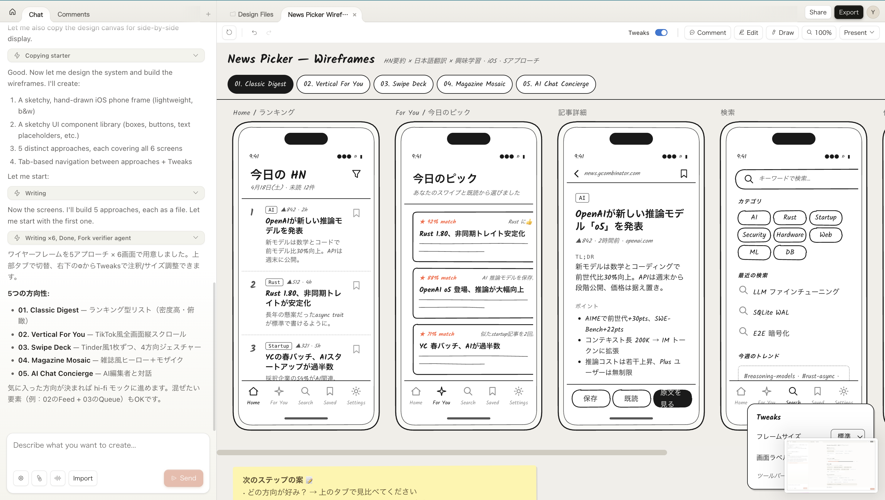
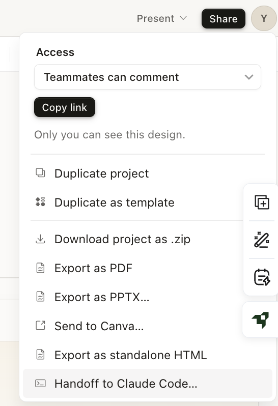
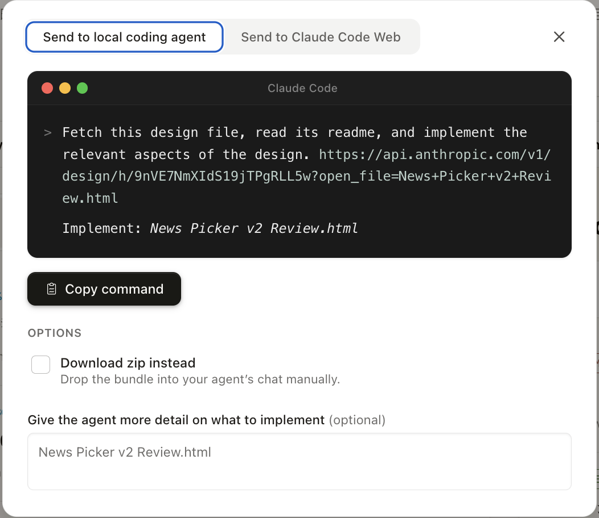
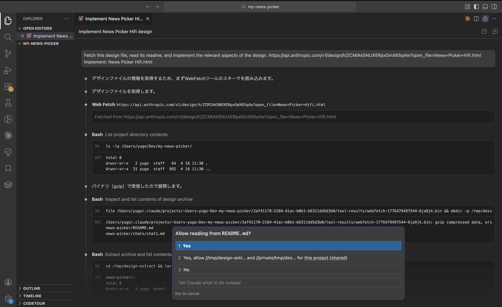

自然言語による対話だけで、デザイン・プロトタイプ・スライド資料といった高品質なビジュアル成果物を生成できる、Anthropic の新しい AI ツール。
チャット形式で「こんなものが作りたい」と伝えるだけで、デザインデータが生成される。デザインの専門知識がなくても、ハイレベルなアウトプットに到達できることを目指したツール。
Figma などの既存のデザインツールと何が違うのか？ ポイントは2つ。
チャットから指示するだけで形になる。細かい調整は UI 上で選ぶだけ。

デザインとコードを行き来できる。デザイン → 実装、実装 → デザインのどちらの方向にも持っていける。
Design 側の成果物を Code 側にスムーズに引き渡す。
Code 側の状態を Design に取り込んで反映できる。


